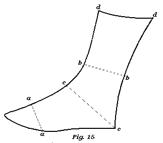

Women�s Half Boots to lace.
This article varies very little from that of the men�s, as in fig. 15, which look to.

The length of the quarter in the women� s is something longer, that is, a a is nearer the toe.
If the heel be high, the boot leg must have more pitch, that is, it must be further-from a perpendicular, and that in proportion to the height of the heel.�In every other respect you must follow the directions given in the men�s, in any kind of leather; and in any kind of wove, with the additional directions in the wove upper slippers.